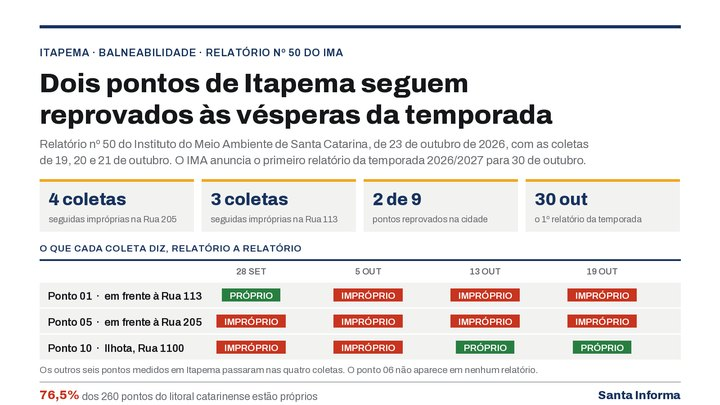
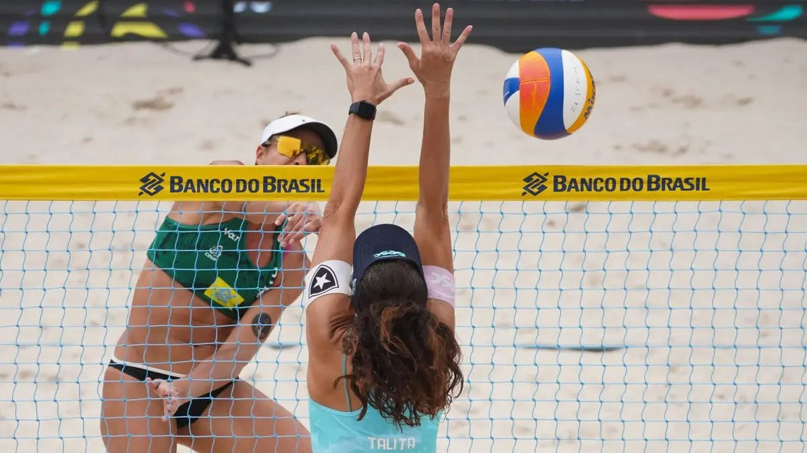
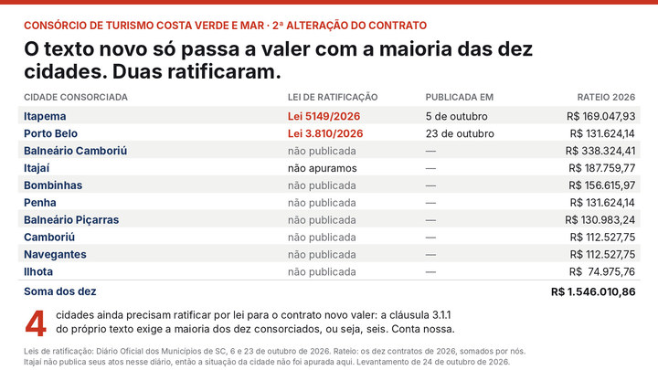

Itapema · Meio AmbienteItapema chega à temporada com dois pontos de praia reprovados, e o da Rua 205 soma quatro coletas seguidas
Como está a água da Meia Praia às vésperas da temporada.
A Prefeitura confirmou nesta quarta, 28 de outubro, que a Meia Praia recebe duas competições de vôlei de praia entre 2 e 13 de dezembro. A arquibancada do terreno da Rua 313 passa a comportar de 2,3 mil a 2,5 mil pessoas, contra cerca de 1,8 mil na edição passada. Fomos às notas de 2025 e montamos a comparação: naquele ano foram três competições em onze dias, e agora são duas em doze. O Sub-21 saiu do calendário, e a realização mudou de mãos, da Confederação Brasileira de Voleibol para a Fesporte.
Em 30 segundos · Modo de Leitura, formato original Santa Informa
Itapema vai ter vôlei de praia em dezembro.
A nota da Prefeitura saiu nesta quarta, 28 de outubro.
A programação vai de 2 a 13 de dezembro.
O lugar é o terreno da Rua 313, na Meia Praia.
São duas competições.
A primeira é a 7ª etapa do Circuito Brasileiro Adulto.
Ela vai de 2 a 6 de dezembro.
A segunda é o Beach Pro Tour Elite16.
É a principal categoria do circuito mundial.
Ela vai de 9 a 13 de dezembro.
Entre as duas, 7 e 8 de dezembro ficam sem jogo.
A etapa mundial traz 32 duplas femininas.
E 32 masculinas.
São oito a mais por categoria que nas edições anteriores.
A arquibancada comporta de 2,3 mil a 2,5 mil pessoas.
No ano passado comportava cerca de 1,8 mil.
A entrada é gratuita.
Mas precisa retirar ingresso antes, pela internet.
A nota não diz quando abre a retirada.
Nem em qual site.
Em 2025 o voucher saiu pela Sympla.
A Vila do Vôlei volta, com atividades para o público.
Em 2025 foram três competições, não duas.
Elas foram de 27 de novembro a 7 de dezembro.
Eram o Challenger, o Sub-21 e o Mundial.
O Sub-21 não aparece na programação de 2026.
A etapa brasileira subiu de Challenger para Adulto.
Em 2025 quem realizava era a CBV.
Com patrocínio do Banco do Brasil.
Em 2026 quem realiza é a Fesporte.
Fesporte é a Fundação Catarinense de Esporte.
O dinheiro é do Governo de Santa Catarina.
A Prefeitura entra como apoio.
A nota diz que não há recurso municipal direto nas competições.
Ela não diz quanto custa o apoio.
Em 2025 a Guarda Municipal ficou no evento todos os dias.
O GRR e a ROMU também.
A Prefeitura informou cerca de 25 mil pessoas na edição de 2025.
O número é da arena mais a Vila do Vôlei, em dez dias.
As finais de 2025 passaram no SporTV.
TurismoPublicada em Redação Santa Informa

A Prefeitura de Itapema publicou nesta quarta, 28 de outubro, que a cidade recebe de 2 a 13 de dezembro etapas dos circuitos brasileiro e mundial de vôlei de praia. O palco é o terreno da Rua 313, na Meia Praia, com estrutura ampliada: a capacidade estimada é de 2,3 mil a 2,5 mil pessoas, contra cerca de 1,8 mil na edição passada. São duas competições, uma a menos que em 2025.
A programação abre com a 7ª etapa do Circuito Brasileiro de Vôlei de Praia Adulto, de 2 a 6 de dezembro. Depois vem o Beach Pro Tour Elite16, principal categoria do circuito mundial, de 9 a 13. A etapa internacional terá 32 duplas femininas e 32 masculinas, oito a mais por categoria que nas edições anteriores. Entre uma competição e outra, 7 e 8 de dezembro ficam sem jogo, e a nota não diz o que acontece na arena nesses dois dias.
Abrimos as notas da edição passada e montamos a comparação. Em 2025 foram três competições em onze dias, de 27 de novembro a 7 de dezembro: a 2ª etapa do Circuito Brasileiro Challenger, a 3ª etapa do Sub-21 e o Mundial Elite16. Agora são duas em doze dias. O Sub-21 não aparece na programação deste ano, e a etapa brasileira sobe de Challenger para o circuito Adulto. Em 8 de dezembro de 2025 a Prefeitura informou que cerca de 25 mil pessoas passaram pela arena e pela Vila do Vôlei ao longo dos dez dias, com as finais transmitidas pelo SporTV.
Em 2025 a realização era da Confederação Brasileira de Voleibol, com patrocínio do Banco do Brasil, parceria da Prefeitura e supervisão da FIVB. Neste ano fica com a Fesporte, a Fundação Catarinense de Esporte, com recursos do Governo de Santa Catarina e apoio da Prefeitura. A nota diz que a parceria com o Estado garantiu a permanência das competições na cidade e que não há investimento de recursos municipais diretamente nas competições. Quanto custa o apoio, ela não diz: na edição passada, Guarda Municipal, Grupo de Resposta Rápida e ROMU ficaram no evento todos os dias.
A entrada é gratuita, com retirada antecipada de ingresso pela internet. As orientações, segundo a nota, saem nos canais oficiais, sem data e sem dizer por qual plataforma. Em 2025 o voucher saía pela Sympla, por exigência da CBV, e valia para as arquibancadas. A Vila do Vôlei, com programação para o público durante os dias de competição, volta neste ano.
O resumo de 30 segundos está no topo e a versão completa é o texto acima. Aqui ficam as três leituras da casa sobre o mesmo assunto.
Clara, a otimista
Doze dias de competição na Meia Praia em dezembro é das melhores coisas que podem cair no colo de uma cidade de praia. Pega o começo da temporada, quando a pousada ainda tem quarto vago e o restaurante ainda está contratando, e enche a orla de gente que veio de fora e vai comer, dormir e passear aqui. No ano passado foram cerca de 25 mil passagens pela arena e pela Vila do Vôlei, e isso aparece no caixa de muita gente que não tem nada a ver com vôlei.
E tem o detalhe de que a arquibancada cresceu. Sair de 1,8 mil para algo entre 2,3 mil e 2,5 mil lugares quer dizer várias centenas de pessoas a mais por dia que conseguem entrar de graça para ver atleta de seleção jogando a dois quarteirões de casa. Criança de Itapema que gosta de esporte vai ter de novo a chance de ver isso de perto, sem pagar nada e sem sair da cidade. Isso fica.
Seu Prudêncio, o criterioso
Merece atenção o que mudou na ficha técnica. Em 2025 quem realizava era a Confederação Brasileira de Voleibol, com patrocínio privado; neste ano a realização é da Fesporte, com recurso estadual. É uma troca grande, e ela explica por que a nota faz questão de dizer que não entra dinheiro municipal direto. Vale acompanhar: o apoio da Prefeitura existe, e tem custo de segurança, trânsito e limpeza que ninguém quantificou até agora.
Duas outras coisas pedem resposta. A primeira é o Sub-21, que estava no calendário do ano passado e sumiu deste, sem explicação na nota. A segunda é a retirada de ingresso: a entrada é gratuita, mas depende de cadastro antecipado, e quem não souber a data de abertura corre o risco de ficar de fora. Uma sugestão útil é publicar o link e o dia de abertura com antecedência, do mesmo jeito que foi feito em 2025.
Dito isso, o saldo é bom e precisa ser dito com todas as letras. A cidade manteve no calendário uma competição de alcance internacional sem tirar dinheiro do caixa municipal, e ainda ampliou a arquibancada. Conseguir que outro ente pague a conta de um evento que movimenta a sua economia é exatamente o trabalho que se espera de uma prefeitura.
Caco, o sarcástico
A arena cresce 700 lugares, a cidade ganha doze dias de vôlei mundial e o investimento municipal direto é zero. Alguém da Prefeitura fez uma negociação boa e eu, sinceramente, queria essa pessoa comprando meu carro.
Aí olho a programação e vejo 7 e 8 de dezembro em branco, bem no meio. Dois dias de arena montada na beira da praia sem jogo nenhum. Pode ser logística, pode ser descanso, pode ser que o calendário mundial seja assim mesmo. Mas é uma janela de dois dias com estrutura pronta e ninguém disse o que vai rolar ali. Se for para ficar vazio, aviso que a cidade inteira vai achar que é para jogar uma pelada.
Reclamação registrada. Mas tá bom porque é progresso: ano passado cabiam 1,8 mil pessoas e muita gente ficou do lado de fora olhando por cima da lona. Este ano cabe mais, é de graça, e o ingresso continua saindo pela internet, que é o jeito moderno de fazer fila sem sair de casa.
Fontes: As datas de 2 a 13 de dezembro, a divisão entre a 7ª etapa do Circuito Brasileiro Adulto e o Beach Pro Tour Elite16, as 32 duplas por categoria, a capacidade estimada de 2,3 mil a 2,5 mil pessoas, a comparação com as cerca de 1,8 mil da edição passada, o terreno da Rua 313, a entrada gratuita com retirada antecipada, a Vila do Vôlei, a realização pela Fesporte com recursos estaduais e as falas do secretário de Esportes Paulinho Camargo e do prefeito Alexandre Xepa estão na nota Itapema volta a receber etapas dos circuitos Brasileiro e Mundial de Vôlei de Praia, publicada pela Prefeitura de Itapema em 28 de outubro de 2026 e aberta por nós na mesma data. O calendário de 2025, com o Challenger de 27 a 30 de novembro, o Sub-21 de 30 de novembro a 2 de dezembro e o Mundial Elite16 de 3 a 7 de dezembro, e a realização pela CBV com patrocínio do Banco do Brasil e supervisão da FIVB, estão na nota Arena começa a ser montada para o Brasileiro e o Mundial de Vôlei de Praia em Itapema, de 12 de novembro de 2025. As cerca de 25 mil pessoas, os dez dias de programação, a transmissão pelo SporTV e a visita dos alunos da rede municipal estão na nota Itapema encerra etapa do Circuito Mundial de Vôlei de Praia com grande público e confirma edição 2026, de 8 de dezembro de 2025. O voucher pela Sympla, por exigência da CBV, está na nota Vôlei de praia em Itapema: público deve emitir voucher gratuito para acessar a arena. A presença da Guarda Municipal, do Grupo de Resposta Rápida e da ROMU em todos os dias de competição está na nota Segurança pública atua no suporte às competições de vôlei. Todas as cinco páginas foram abertas por nós em 28 de outubro de 2026. A contagem de dias, a comparação entre os dois calendários e a conta dos dois dias sem jogo são nossas. A foto do topo é da Prefeitura de Itapema e registra uma edição anterior, o que está dito na legenda; recortamos o enquadramento para o formato da página.

Itapema · Meio AmbienteComo está a água da Meia Praia às vésperas da temporada.

Itapema · TurismoQuem organiza o turismo da Costa Esmeralda, e o que ainda falta assinar.
 Itapema · Turismo
Itapema · TurismoA outra estrutura grande que a cidade monta nos próximos dias.